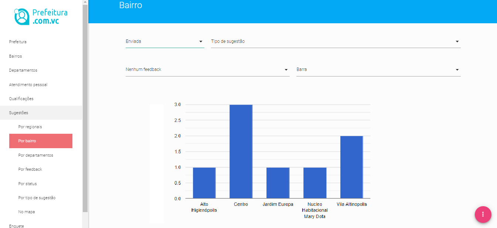
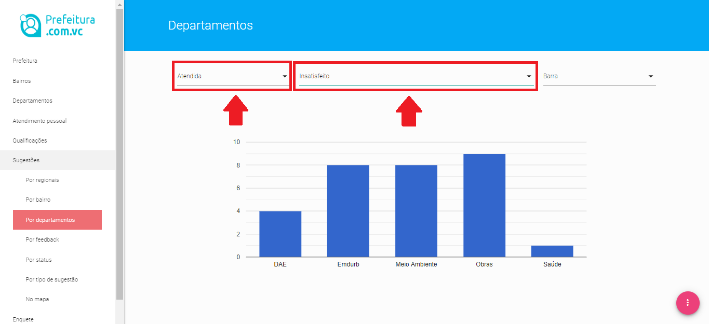
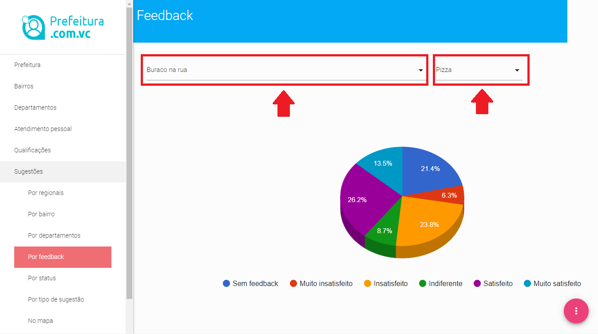
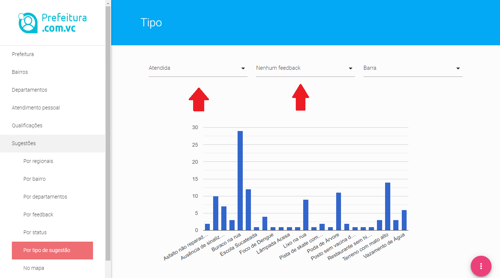
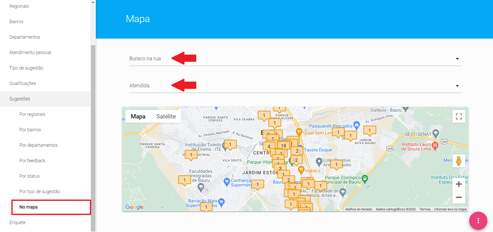

No menu sugestões, o gestor, seja do Departamento (nível 2), seja do Setor (nível 3), cada um dentro da visão delimitada pelas responsabilidades de seu nível, consegue extrair diversos gráficos para poder obter informações que o ajudarão a gerir as solicitações por parte do cidadão, bem como ter uma visão geral do status das mesmas e da qualidade percebida do atendimento pelos cidadãos.
Por Bairro
Nesta área os gestores, tanto das unidades gestoras (nível 1), como dos setores (nível 2), conseguem ver todas as demandas de sua responsabilidade, catalogadas por bairros.

Demandas por Bairros
A ferramenta de BI - Businnes Inteligence consegue ainda filtrar esse resultado combinando três parâmetros:
Pelo status da demanda (recebida, visualizada, atendida e desconsiderada). Escolhendo-se um destes status, podemos ver o conjunto de sugestões daquele status distribuídos pelos bairros da cidade.
Pelo Tipo de sugestão, permitindo que o gestor escolha uma das sugestões e particularize o resultado; e
Pelo Feedback, permitindo que o gestor veja a distribuição das avaliações dadas pelos cidadãos e consiga determinar novas formas para atender melhor a população.
A última caixa de seleção permite que as informações ao invés de serem mostradas no formato de barras sejam organizadas no formato de gráfico de pizza.
APLICAÇÕES:
Esta ferramenta pode ajudar os gestores a desencadearem força tarefa para bairros que apresentarem no item DEMANDA ENVIADA um número de demandas muito superior aos outros, por exemplo.
Pode se determinar quais bairros têm problemas com baixo índice de satisfação, escolhendo-se a opção ATENDIDA, no status, e MUITO INSATISFEITO, no feedback.
Ou pode-se ainda todas as opções acima serem examinadas pera uma determinada sugestão, fazendo todas as interações já sugeridas acima, mas escolhendo-se na caixa de seleção Tipo de Sugestão a demanda desejada.
Por departamento ou setor
Nesta área os Departamentos (nível 2) conseguem catalogar e filtrar as sugestões por setores (nível 3), já o grupo gestor da prefeitura, faz os mesmos filtros, catalogando as ocorrências por departamentos (nível1).
A ferramenta de BI - Businnes Inteligence consegue, da mesma forma, filtrar esse resultado combinando dois parâmetros:

Demandas por Departamentos
Pelo status da demanda (recebida, visualizada, atendida e desconsiderada). Escolhendo-se um destes status, podemos ver o conjunto de sugestões daquele status distribuídos pelos departamentos da prefeitura.
Pelo Feedback, permitindo que o gestor veja a distribuição das avaliações dadas pelos cidadãos e consiga determinar novas formas para atender melhor a população.
É possível também neste caso, pela última caixa de seleção permite que as informações ao invés de serem mostradas no formato de barras sejam organizadas no formato de gráfico de pizza.
APLICAÇÕES:
Esta ferramenta pode ajudar os gestores a desencadearem força tarefa para um determinado setor (nível 2) ou demanda que apresentar no item DEMANDA ENVIADA um número de demandas muito superior aos outros, por exemplo.
Pode se determinar quais setores (nível 2) ou equipes operacionais têm problemas com baixo índice de satisfação, escolhendo-se a opção ATENDIDA no status e MUITO INSATISFEITO no feedback
Por Feedeback
Essa funcionalidade fornece ao grupo gestor, aos gestores de Departamentos (nível 2) e Setores (nível 3), para cada sugestão abrangida por seu grau de responsabilidade uma distribuição dos níveis de avaliação atribuídos pelos cidadãos após o atendimento da demanda, ou seja, muito insatisfeito, insatisfeito, indiferente, satisfeito e muito satisfeito.
Mais uma vez o resultado é possível de ser visualizado em duas modalidades, gráfico de barra e gráfico de pizza.

Avaliações por Demanda
APLICAÇÕES:
A partir de um conceito de gestão municipal pautada pelo profissionalismo, é possível fazer ligações ativas para cidadãos insatisfeitos; com a informação obtida, medir o desempenho das equipes internas, identificando pontos onde o atendimento pode melhorar.
Quando os departamentos têm serviços atendidos por empresas terceirizadas, é possivel identificar a qualidade da prestação do serviço e atuar com o fornecedors para a melhoria da qualidade percebida pelo munícipe.
Por Status
Nesta área o grupo gestor, os gestores dos Departamentos (nível 2) e Setores (nível 3) conseguem catalogar e filtrar cada sugestão de sua responsabilidade por status.
>Ainda existe a possibilidade de combinação com o filtro de Feedback, lembrando ainda que sempre é possível alterar a forma de organização dos dados de gráfico de barras para gráfico de pizza.
Por tipo de sugestão
Aqui nesse menu, o grupo gestor, os gestores dos Departamentos (nível 2) e Setores (nível 3), todos em seu nível de abrangência determinado pelo conjunto de sugestões de sua responsabilidade, conseguem enxergar qual é a incidência de cada uma das sugestões, combinando a incidência com dois filtros diferentes.
Pelo status da demanda (envida, visualizada, atendida e desconsiderada). Escolhendo-se um destes status, podemos ver o conjunto de sugestões daquele status distribuídos pelos departamentos da prefeitura.

Depandas por "Tipo de sugestão"
Pelo Feedback, permitindo que o gestor veja a distribuição das avaliações dadas pelos cidadãos e consiga determinar novas formas para atender melhor a população.
Como sempre é possível organizar os resultados em gráficos de barras ou gráfico de pizza.
No mapa
Finalmente, mas não menos importante, a Plataforma de Governança Colaborativa prefeitura.com.vc oferece uma funcionalidade para o grupo gestor, os gestores ddos Departamentos (nível 2) e Setores (nível 3), todos em seu nível de abrangência determinado pelo conjunto de sugestões de sua responsabilidade visualizarem as sugestões geo referenciadas em mapa.
Essa funcionalidade combina dois filtros, o primeiro escolhe uma determinada sugestão, o segundo permite ver o geo referenciamento das sugestões por status de solução da demanda, ou seja, as enviadas, as visualizadas e as atendidas.

Demandas por "Tipo de sugestão" no mapa
APLICAÇÕES:
As sugestões inseridas no mapa e filtradas por status de resolução da demanda pode ajudar o setor (nível 2) que ordena a solução do problema e organizar o dia de trabalho das equipes de rua, escolhendo por região geográfica o conjunto de sugestões a serem atendidas, tornando mais racional o deslocamento, ganhando em produtividade e economizando recursos e combustível.
A visualização em mapa também contribui não deixar nenhuma demanda sem execução, ainda que a mesma esteja descolada de pontos de concentrações de ocorrências de mesma natureza.